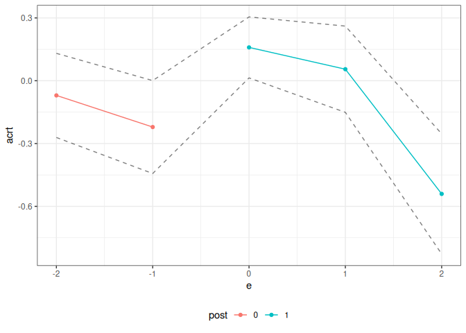

An R package for difference-in-differences with a continuous treatment.
Installation
You can install the development version of contdid from GitHub with:
# install.packages("devtools")
devtools::install_github("bcallaway11/contdid")
library(contdid)Conceptual Setup
Below, we give several examples of how to estimate causal effect parameters using the cont_did package.
At a high level, the interface is basically the same as for the did package and for other packages that rely on the ptetools backend, with only a few pieces of additional information being required. First, the name of the continuous treatment variable should be passed through the dname argument.
The cont_did function expects the continuous treatment variable to behave in certain ways:
It needs to be time-invariant.
It should be set to its time-invariant value in pre-treatment periods. This is just a convention of the package, but, in particular, you should not have the treatment variable coded as being 0 in pre-treatment periods.
For units that don’t participate in the treatment in any time period, the treatment variable just needs to be time-invariant. In some applications, e.g., the continuous treatment variable may be defined for units that don’t actually participate in the treatment. In other applications, it may not be defined for units that do not participate in the treatment. The function behaves the same way in either case.
Next, the other important parameters are target_parameter, aggregation, and treatment_type:
target_parametercan either be “level” or “slope”. If “level”, then the function will calculateATTparameters. If set to be “slope”, then the function will calculateACRTparameters—these are causal response parameters that are derivatives of theATTparameters. Our paper Callaway, Goodman-Bacon, and Sant’Anna (2024) points out some complications for interpreting these derivative type parameters under the most commonly invoked version of the parallel trends assumption.aggregationcan either by “eventstudy” or “dose”. For “eventstudy”, depending on the value of thetarget_parameterargument, the function will provide either the averageATTacross different event times or the averageACRTacross different event times. For “dose”, the function will average across all time periods and report average affects across different values of the continuous treatment. For the “dose” aggregation, results are calculated for bothATTandACRTand can be displayed by providing different arguments to plotting functions (see example below).treatment_typecan either be “continuous” or “discrete”. Currently only “continuous” is supported. In this case, the code proceeds as if the treatment really is continuous. The estimate are computed nonparametrically using B-splines. The user can control the number of knots and the degree of the B-splines using thenum_knotsanddegreearguments. The defaults arenum_knots=0anddegree=1which amounts to estimatingATT(d)by estimating a linear model in the continuous treatment among treated units and subtracting the average outcome among the comparison units.
Examples
With a continous treatment, the underlying building blocks are treatment effects that are local to a particular timing group g in a particular time period t that experienced a particular value of the treatment d. These treatment affects are relatively high-dimensional, and most applications are likely to involve aggregating/combining these underlying parameters. We focus on aggregations that (i) average across timing-groups and time periods to given average treatment effect parameters as a function of the dose d or (ii) averages across doses and partially across timing group and time periods in order to give event studies.
For the results below, we will simulate some data, where the continuous treatment D has no effect on the outcome.
# Simulate data
set.seed(123)
# baseline simulation parameters
sp <- did::reset.sim()
# adjust some default simulation parameters
sp$n <- 10000 # increase number of units
sp$bett <- sp$betu <- sp$te.bet.X <- rep(0, length(sp$bett)) # no effects of covariates
sp$te <- 0 # the effect of the treatment is 0
df <- did::build_sim_dataset(sp)
n <- length(unique(df$id))
D <- runif(n, 0, 1)
# add treatment variable, it is fully independent of everything else
df$D <- BMisc::time_invariant_to_panel(D, df, "id")
head(df)
#> # A tibble: 6 × 8
#> G X id cluster period Y treat D
#> <dbl> <dbl> <int> <int> <dbl> <dbl> <dbl> <dbl>
#> 1 4 -0.560 1 19 1 2.47 1 0.548
#> 2 4 -0.560 1 19 2 5.23 1 0.548
#> 3 4 -0.560 1 19 3 6.20 1 0.548
#> 4 4 -0.560 1 19 4 6.29 1 0.548
#> 5 3 1.56 3 16 1 2.63 1 0.0237
#> 6 3 1.56 3 16 2 4.21 1 0.0237Case 1: Dose Aggregation
The following code can be used to estimate the ATT(d) and ACRT(d) parameters for the continuous treatment D using the cont_did function. The aggregation argument is set to “dose” and the target_parameter argument is set to “level” for ATT(d) and “slope” for ACRT(d).
cd_res <- cont_did(
yname = "Y",
tname = "period",
idname = "id",
dname = "D",
data = df,
gname = "G",
target_parameter = "slope",
aggregation = "dose",
treatment_type = "continuous",
control_group = "notyettreated",
biters = 100,
cband = TRUE,
num_knots = 1,
degree = 3,
)
summary(cd_res)
#>
#> Overall ATT:
#> ATT Std. Error [ 95% Conf. Int.]
#> 0.0067 0.027 -0.0461 0.0596
#>
#>
#> Overall ACRT:
#> ACRT Std. Error [ 95% Conf. Int.]
#> 0.0376 0.0532 -0.0667 0.1419
#> ---
#> Signif. codes: `*' confidence band does not cover 0
ggcont_did(cd_res, type = "att")
ggcont_did(cd_res, type = "acrt")
Case 2: Event Study Aggregations
Next, we consider event study aggregations. The first is event study aggregation for ATT. The second is event study aggregation for ACRT.
Event study aggregation for ATT:
Notice that the target parameter is set level to target ATT, and the aggregation argument is set to eventstudy.
cd_res_es_level <- cont_did(
yname = "Y",
tname = "period",
idname = "id",
dname = "D",
data = df,
gname = "G",
target_parameter = "level",
aggregation = "eventstudy",
treatment_type = "continuous",
control_group = "notyettreated",
biters = 100,
cband = TRUE,
num_knots = 1,
degree = 3,
)
summary(cd_res_es_level)
#>
#> Overall ATT:
#> ATT Std. Error [ 95% Conf. Int.]
#> 0.0121 0.0192 -0.0255 0.0497
#>
#>
#> Dynamic Effects:
#> Event Time Estimate Std. Error [95% Conf. Band]
#> -2 -0.0965 0.0410 -0.2054 0.0124
#> -1 0.0339 0.0256 -0.0341 0.1019
#> 0 0.0091 0.0207 -0.0457 0.0639
#> 1 0.0149 0.0246 -0.0504 0.0803
#> 2 0.0058 0.0381 -0.0953 0.1070
#> ---
#> Signif. codes: `*' confidence band does not cover 0
ggcont_did(cd_res_es_level)
Event study aggregation for ACRT:
Relative to the previous code, notice that the target parameter is set slope to target ACRT.
cd_res_es_slope <- cont_did(
yname = "Y",
tname = "period",
idname = "id",
dname = "D",
data = df,
gname = "G",
target_parameter = "slope",
aggregation = "eventstudy",
treatment_type = "continuous",
control_group = "notyettreated",
biters = 100,
cband = TRUE,
num_knots = 1,
degree = 3,
)
summary(cd_res_es_slope)
#>
#> Overall ACRT:
#> ATT Std. Error [ 95% Conf. Int.]
#> 0.0376 0.0435 -0.0477 0.1229
#>
#>
#> Dynamic Effects:
#> Event Time Estimate Std. Error [95% Conf. Band]
#> -2 0.0723 0.0510 -0.0656 0.2102
#> -1 0.0036 0.0607 -0.1604 0.1676
#> 0 0.0862 0.0476 -0.0426 0.2150
#> 1 0.0448 0.0676 -0.1381 0.2277
#> 2 0.0457 0.1139 -0.2622 0.3537
#> ---
#> Signif. codes: `*' confidence band does not cover 0
ggcont_did(cd_res_es_slope)